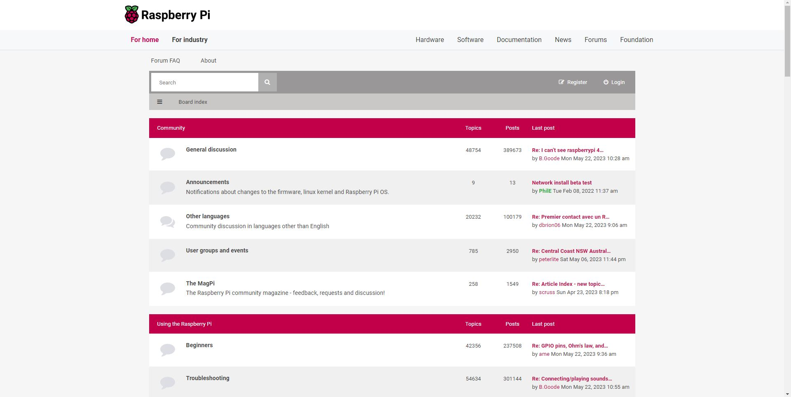

Raspberry Pi Zanimljivosti
Natrag
Raspberry Pi ima službeni časopis - MagPi*
 Nedavno je izašao Raspberry Pi 400 koji je tipkovnica s integriranim Raspberry Pi-om.
Nedavno je izašao Raspberry Pi 400 koji je tipkovnica s integriranim Raspberry Pi-om.
Raspberry Pi ima službeni forum*.

*Linkovi dostupni u "Linkovi" sekciji glavne stranice.
Natrag